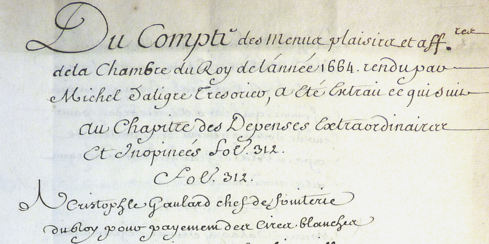

Manuscrits

Imprimés

Images

1662, 5-6 juin. Paris, Louvre.
Courses de têtes et de bagues.
Courses de testes et de bagues faites par le roy et par les princes et seigneurs en l’année 1662.
Paris, Imprimerie royale, 1670. Paris, BNF, Estampes, RESERVE PD-10 (B)-BOITE FOL
1663, 8 janvier. Paris, Palais Royal.
Ballet des Arts.
Ballet des Arts, dansé par Sa Majesté le 8 Janvier 1663
1664, 10 janvier. Paris, Palais Royal.
La Bradamante ridicule, comédie.
Registre de La Grange (1658-1685) : précédé d’une notice biographique / publié par les soins de la Comédie-Française...[par Edouard Thierry]
Paris, J. Claye, 1876.
La Bradamante ridicule représentée devant le Roi. Estampe pour un écran à main
estampe à l'eau-forte, Paris, BNF, Estampes, Réserve, Coll. Hennin, QB-201 (31)-FOL, Hennin 2720
La Bradamante ridicule représentée devant le Roi. Estampe pour un écran à main
estampe à l'eau forte, Paris, BNF, Estampes, Réserve, Coll. Hennin, QB-201 (31)-FOL, Hennin 2721
1664, 29 janvier. Paris, Louvre.
Le Mariage forcé, comédie-ballet.
Registre de La Grange (1658-1685) : précédé d’une notice biographique / publié par les soins de la Comédie-Française...[par Edouard Thierry]
Paris, J. Claye, 1876.
« Interdite », La Muze historique, Lettre V, Lettre en vers à Son Altesse Madame la Duchesse de Nemours. Du samedi 2 février 1664.
Paris, P. Daffis, 1878, t. IV, p. 159-160.
Le mariage forcé, ballet du Roy, dansé par S. M. le 29 jour de janvier 1664
Paris, BNF, Réserve des livres rares, RES-YF-2257
1664, 31 janvier. Paris, Louvre.
Le Mariage forcé, comédie-ballet.
Registre de La Grange (1658-1685) : précédé d’une notice biographique / publié par les soins de la Comédie-Française...[par Edouard Thierry]
Paris, J. Claye, 1876.
« Interdite », La Muze historique, Lettre V, Lettre en vers à Son Altesse Madame la Duchesse de Nemours. Du samedi 2 février 1664.
Paris, P. Daffis, 1878, t. IV, p. 159-160.
Le mariage forcé, ballet du Roy, dansé par S. M. le 29 jour de janvier 1664
Paris, BNF, Réserve des livres rares, RES-YF-2257
1664, 13 février. Paris, Palais Royal.
Les Amours déguisés, ballet.
Les Amours Deguisez, Ballet du Roy, Dansée par Sa Majesté, au mois de Fevrier 1664. Recueilly par Philidor l’aisné en 1690
Paris, BNF, Musique, RES F-511
Recueil des gazettes nouvelles, ordinaires et extraordinaires. Relations et récits des choses avenues tant en ce royaume qu’ailleurs, pendant l’année mil six cent soixante-quatre.
Paris, Bureau d’adresse, 1664, n°21, p. 166-168.
« Hazardée », La Muze historique, Lettre VII en vers à Son Altesse Madame la Duchesse de Nemours. Du 16 février 1664.
Paris, P. Daffis, 1878, t. IV, p. 164-166.
Les Amours déguisés. Ballet du roi, dansé par Sa Majesté au mois de Février 1664
Paris, BNF, département des Manuscrits, RES. YF-1050
1664, 7-13 mai. Versailles, Château de Versailles.
Les Plaisirs de l’île enchantée.
Marché passé entre Denis Buret, menuisier, et Jean-Baptiste Colbert pour la construction de deux théâtres portatifs dans le salon de Versailles. 20 février 1664. Copie par Fromageot d'un original perdu.
Versailles, Bibliothèque municipale de Versailles, Collection Fromageot, A III c.
Marché passé entre Antoine Petit, maître charpentier, et Carlo Vigarany, entrepreneur des ballets du roi, pour la fourniture du bois destiné au théâtre des Plaisirs de l’Île enchantée à Versailles. 20 mars 1664
Paris, Archives nationales, Minutier central, Réserve 388.
Comptes des menus plaisirs de la chambre du roi.
1664, Paris, Archives nationales, KK 213, fol. 25v. Publié par Campardon, Nouvelles Pièces sur Molière, p. 40-41.
États de la dépense et recette du Trésor royal. Copies collationnées par des commis du Trésor. 1664. Tome I : janvier-juin
Paris, BNF, Manuscrits, Mélanges Colbert 268, fol. 34-40.
« Les plaisirs de l’isle enchantée, ordonnéz par Louis XIV, roy de France et de Navarre, à Versailles, le 6 may 1664, » par DE BIZINCOURT.
Manuscrit relié aux armes du roi, Paris, BNF, Manuscrits, Ms. Français 7834
Les Plaisirs De L'Isle Enchantée Festes Galantes, et Magnifiques, faites par Le Roy à Versailles, le 7e May 1664.
1690, Paris, BNF, Musique, RES F-531
Les Plaisirs de l'île enchantée. Dessin du frontispice
Dessin à la plume, à l'encre noire et au lavis gris, 60,8 x 90,3 cm, Paris, Archives nationales, CP O1 3239, n° 81
Les plaisirs de l’isle enchantée.
Paris, Robert Ballard, 1664. Paris, BNF, Imprimés, Rés. Yf-1613
Les Plaisirs de l'île enchantée : Course de bague, collation ornée de machines, comédie mêlée de danse et de musique, ballet du palais d'Alcine, feu d'artifice, et autres fêtes galantes et magnifiques, faites par le roi à Versailles, le 7 mai 1664
Paris, Ballard, 1664. Paris, BNF, département Réserve des livres rares, RES-V-497
« Immanquable », La Muze historique, Lettre XVIII, Lettre en vers à Son Altesse Madame la Duchesse de Nemours.
Paris, P. Daffis, 1878, t. IV, P. 195-197.
Recueil des gazettes nouvelles, ordinaires et extraordinaires. Relations et récits des choses avenues tant en ce royaume qu’ailleurs, pendant l’année mil six cent soixante-quatre
Paris, Bureau d’adresse, 1664, n° 56, p. 456.
« Les particularitez des divertissemens pris à Versailles par leurs Majestés », dans Recueil des gazettes nouvelles, ordinaires et extraordinaires. Relations et récits des choses avenues tant en ce royaume qu’ailleurs, pendant l’année mil six cent soixante-quatre.
Paris, Bureau d’adresse, 1664, n° 60, p. 481-496.
Mémoires de messire Roger de Rabutin, comte de Bussy
Tome 2, Paris, Jean Anisson, 1696, p. 292
Journal d’Olivier Lefèvre d’Ormesson
Paris, Chéruel, 1860-1861, p. 142-143.
Les Plaisirs de l’isle enchantée, ou la Princesse d’Élide, comédie de M. Molière.
J. Guignard, Paris, 1668, Paris, BNF, Tolbiac, RES-YF-4192.
Les plaisirs de l’isle enchantée. Course de bague; collation ornée de machines; comedie, meslée de danse et de musique; ballet du palais d’Alcine; feu d’artifice; et autres festes galantes et magnifiques faites par le Roy a Versailles le VII. May M.DC.LXIV. et continuées plusieurs autres jours
Paris, imprimerie royale, 1673, Paris, BNF, Tolbiac, RES-V-498.
1664, 7 mai. Versailles, Château de Versailles.
Plaisirs de l’île enchantée, première journée.
Les Plaisirs de l'île enchantée. Première planche servant de frontispice
Estampe, 28 x 42,3 cm, Paris, BNF, Estampes, RESERVE QB-201 (46)-FOL, Hennin 4207
Première journée des Plaisirs de l'île enchantée. Le roi et ses chevaliers dans l'arène écoutant les récits d'Apollon et des quatre Siècles
Estampe, 27,6x42,3cm, Paris, BNF, Estampes, RESERVE QB-201 (46)-FOL, Hennin 4209
Première journée des Plaisirs de l'île enchantée. Course de bague disputée par le roi et ses cheualiers
Estampe, 27,6 x 42 cm, Paris, BNF, Estampes, RESERVE QB-201 (46)-FOL, Hennin 4210
Première journée des Plaisirs de l'île enchantée. Festin servi au roi, aux reines et à des dames de la cour
Estampe, 27,5 x 42,2 cm, Paris, BNF, Estampes, RESERVE QB-201 (46)-FOL, Hennin, 4212
Premiere journée des Plaisirs de l'ile enchantée. Marche du roi et de ses chevaliers
Estampe, 27,6 x 42,3 cm, Paris, BNF, Estampes, RESERVE QB-201 (46)-FOL, Hennin 4208
Première journée. Les quatre Saisons, Pan et Diane avec leur suite portent les plats du festin en s'adressant au roi et aux reines
Estampe, 27,6 x 42,2 cm, Paris, BNF, Estampes, RESERVE FOL-QB-201 (46), Hennin 4211
Première journée des Plaisirs de l'Ile enchantée. Le char d'Apollon, conduit par le Temps
Contre-épreuve d’un dessin à la pierre noire, 56 x 41,4 cm, Paris, Archives nationales, CP O1 3238, n° 15
Première journée des Plaisirs de l'Ile enchantée. Le char d'Apollon, conduit par le Temps
Contre-épreuve d’un dessin à la pierre noire, 25,5 x 39,2 cm, Paris, Archives nationales, CP O1 23241, n° 77b
Première journée des Plaisirs de l'île enchantée. La machine de Pan et de Diane
Contre-épreuve d’un dessin à la pierre noire, 53,5 x 38,3 cm, Paris, Archives nationales, CP O1 3242A, n° 52
Première journée des Plaisirs de l’Ile enchantée. Décor de feuillées pour l'arène
Dessin à la pierre noire, 53,2 x 38,4 cm, Paris, Archives nationales, CP, O1 3242A, n° 88
Premiere journée des Plaisirs de l'ile enchantée. Marche du roi et de ses chevaliers
Dessin à la pierre noire, à la plume, à l'encre noire et au lavis gris, 61,6 x 90 cm, Paris, Archives nationales, CP O1 3242B, n°1
Première journée des Plaisirs de l'Ile enchantée. Le Printemps sur un cheval
Dessin à la pierre noire, traces d'encre brune à la plume, 48,4 x 40 cm, Paris, BNF, Estampes, OA 37(2) Fol
Première journée des Plaisirs de l'Ile enchantée. L'Automne sur un chameau
dessin à la pierre noire, traces d'encre brune à la plume, 51,5 x 40,8 cm, Paris, BNF, Estampes, OA 37(2) Fol
Première journée des Plaisirs de l'Ile enchantée. Le char d'Apollon, conduit par le Temps
Dessin à la pierre noire, 38 x 37 cm, Paris, BNF, Estampes, OA 37(2) Fol
Cavalier au pied d'un cheval. Représentation d'un chevalier des Plaisirs de l'île enchantée ?
dessin à la pierre noire, traces d'encre brune à la plume, 42,7 x 38,2 cm, Paris, BNF, Estampes, OA 37(2) Fol
Première journée des Plaisirs de l'Ile enchantée. Pan et Diane avec leur suite
Dessin à la plume, à l'encre brune et au lavis brun, 31,8 x 22 cm, Paris, BNF, BMO, Esquisses anciennes, II, 34
Première journée des Plaisirs de l'Ile enchantée. Les Saisons avec leur suite
Dessin à la plume, à l'encre brune et au lavis brun, 31,8 x 22 cm, Paris, BNF, BMO, Esquisses anciennes, II, 35
Première journée des Plaisirs de l'Ile enchantée. L'Hiver sur un ours
dessin à la pierre noire, 41 x 32,9 cm, Stockholm, Konstakademien, portef. 22, n° 28
Première journée des Plaisirs de l'Ile enchantée. L'Eté sur un éléphant
dessin à la pierre noire, 44,9 x 34,9 cm, Stockholm, Konstakademien, portef. 22, n° 29
Première journée des Plaisirs de l'Ile enchantée. Le Printemps sur un cheval
contre-épreuve d'un dessin à la pierre noire, 53 x 37,5 cm, Stockholm, Konstakademien, portef. 22, n° 30
Première journée des Plaisirs de l'Ile enchantée. L'Automne sur un chameau
contre-épreuve d'un dessin à la pierre noire, 52 x 37,5 cm, Stockholm, Konstakademien, portef. 22, n° 31
"Avertissante", La Muze historique, Lettre XIX, Lettre en vers à Son Altesse Madame la Duchesse de Nemours. Du 17 mai 1664.
Paris, P. Daffis, 1878, t. IV, p. 198.
1664, 8 mai. Versailles, Château de Versailles.
Plaisirs de l’île enchantée, deuxième journée.
Registre de La Grange (1658-1685) : précédé d’une notice biographique / publié par les soins de la Comédie-Française...[par Edouard Thierry]
Paris, J. Claye, 1876.
Deuxième journée des Plaisirs de l'île enchantée. Moron et un ours, scène de la Princesse d’Elide
Dessin à la plume, à l'encre noire et au lavis gris, 57,4 x 41,8 cm, Paris, Archives nationales, O1 3239, n° 57
Seconde journée des Plaisirs de l'île enchantée. Représentation de la Princesse d'Elide dans les jardins de Versailles
Dessin à la pierre noire, à l'encre noire et au lavis gris, 60,4 x 89,6 cm, Paris, CP O1 3242A, n°89
Seconde journée des Plaisirs de l'île enchantée. Représentation de la Princesse d'Elide dans les jardins de Versailles
Estampe, 28,2 x 42,8 cm, Paris, Estampes, RESERVE QB-201 (46)-FOL, Hennin 4213
1664, 9 mai. Versailles, Château de Versailles.
Plaisirs de l’île enchantée, troisième journée.
Troisième journée des PLaisirs de l'île enchantée. Représentation du ballet d’Alcine
contre-épreuve d’un dessin à la pierre noire, 35,4 x 27 cm, Paris, Archives nationales, CP O1 3238, n° 68b
Troisième journée des PLaisirs de l'île enchantée. Alcine devant son palais dressé sur le bassin des cygnes
dessin à la plume, à l'encre noire et au lavis gris, avec des traces de pierre noire, 58,5 x 89,7 cm, Paris, Archives nationales, CP O1 3242B, n° 2
Troisième journée des Plaisirs de l'île enchantée. Feu d'artifice tiré sur le bassin des cygnes
huile sur toile, 40,5 x 59,5 cm, Versailles, Musée Lambinet, inv. n° 2579
Troisième journée des Plaisirs de l'île enchantée. Feu d'artifice avec la destruction du palais d'Alcine
Estampe, 28,2 x 42,9 cm, Paris, BNF, Estampes, RESERVE QB-201 (46)-FOL, Hennin 4215
Troisième journée des PLaisirs de l'île enchantée. Alcine devant son palais dressé sur le bassin des cygnes
Estampe, 27,1 x 42,4 cm, Paris, BNF, Estampes, RESERVE QB-201 (46)-FOL, Hennin 4214
1664, 11 mai. Versailles, Château de Versailles.
Suite des Plaisirs de l’île enchantée, cinquième journée.
Registre de La Grange (1658-1685) : précédé d’une notice biographique / publié par les soins de la Comédie-Française...[par Edouard Thierry]
Paris, J. Claye, 1876.
1664, 12 mai. Versailles, Château de Versailles.
Suite des Plaisirs de l’île enchantée, sixième journée.
Registre de La Grange (1658-1685) : précédé d’une notice biographique / publié par les soins de la Comédie-Française...[par Edouard Thierry]
Paris, J. Claye, 1876.
1664, 13 mai. Versailles, Château de Versailles.
Suite des Plaisirs de l’île enchantée, septième journée.
Registre de La Grange (1658-1685) : précédé d’une notice biographique / publié par les soins de la Comédie-Française...[par Edouard Thierry]
Paris, J. Claye, 1876.
1664, 30 juillet – 13 août. Fontainebleau.
Divertissements pour la réception du cardinal Chigi.
Registre de La Grange (1658-1685) : précédé d’une notice biographique / publié par les soins de la Comédie-Française...[par Edouard Thierry]
Paris, J. Claye, 1876.
Relazione del viaggio fatto dall’ill.mo Sig. Card.e Chigi
Rome, Biblioteca Apostolica Vaticana, Manuscrit Chigi E.II.38, p. 257 recto – 258 verso, 1664. Texte traduit par Tristan Alonge, en ligne
Mémoire du traitement fait par la Maison du Roi à Monsieur le Cardinal Chigi.
1664, Paris, BNF, Manuscrits, Ms. français 6143. Édition critique de Daniela Del Pesco
« Curieuse », La Muze historique, Lettre XXX, Lettre en vers à Son Altesse Madame la Duchesse de Nemours. Du samedi 2 août 1664.
Paris, P. Daffis, 1878, t. IV, p. 228-229.
« Régalante », La Muze historique, Lettre XXXI, Lettre en vers à Son Altesse Madame la Duchesse de Nemours. Du samedi 9 août 1664.
Paris, P. Daffis, 1878, t. IV, p. 231-233.
1664, 13-25 octobre. Versailles, Château de Versailles.
Divertissements à la cour : L'Impromptu de Versailles, L'Ecole des maris, L'Ecole de femmes, Le Cocu imaginaire, Le Dépit amoureux, L'Etourdi, Les Fâcheux.
Registre de La Grange (1658-1685) : précédé d’une notice biographique / publié par les soins de la Comédie-Française...[par Edouard Thierry]
Paris, J. Claye, 1876.
1664. Vincennes, Château de Vincennes.
Ballet.
Compte des Menus plaisirs et affaires de la Chambre du Roi de l’année 1664 rendu par Michel d’Aligre Trésorier, a été extrait ce qui suit au chapitre des Dépenses exraordinaires et inopinées.
1664 Paris, Archives nationales, O1 2984
1664. Fontainebleau.
Feu d'artifice, L'Histoire du mauvais riche.
Compte des Menus plaisirs et affaires de la Chambre du Roi de l’année 1664 rendu par Michel d’Aligre Trésorier, a été extrait ce qui suit au chapitre des Dépenses exraordinaires et inopinées.
1664 Paris, Archives nationales, O1 2984
1668, 18 juillet. Versailles, Château de Versailles.
Le Grand divertissement royal de Versailles.
Relation de la feste de Versailles. Du dix-huitième juillet mil six cens soixante-huit. Par André Félibien.
Paris Pierre le Petit, 1668
1674, 4 juillet – 31 août. Versailles, Château de Versailles.
Les Divertissements de Versailles.
Les Divertissemens de Versailles, donnez par le Roy au retour de la conqueste de la Franche-Comté, en l’année 1674. [Par A. Félibien.].
Paris, Imprimerie royale, 1676.
Première journée des Divertissemens de Versailles. Alceste tragédie en musique ornée d'entrées de ballet
Estampe, Paris, BNF, Estampes, RESERVE QB-201 (46)-FOL, Hennin 4731
Seconde journée des Divertissemens de Versailles. Concerts de musique.
Estampe, Paris, BNF, Estampes, RESERVE QB-201 (46)-FOL, Hennin 4732
Troisième journée des Divertissemens de Versailles. Le Malade Imaginaire, comédie représentée dans le jardin.
Estampe, Paris, BNF, Estampes, RESERVE QB-201 (46)-FOL, Hennin 4733
Quatrième journée des Divertissemens de Versailles. Festin dans la cour de marbre.
Estampe, Paris, BNF, Estampes, RESERVE QB-201 (46)-FOL, Hennin 4734
Cinquième journée des Divertissemens de Versailles. Feu d'artifice sur le canal.
Estampe, Paris, BNF, Estampes, RESERVE QB-201 (46)-FOL, Hennin 4735
Sixième journée des Divertissemens de Versailles. Illuminations autour du grand canal.
Estampe, Paris, BNF, Estampes, RESERVE QB-201 (46)-FOL, Hennin 4736
1680, 13 juillet – 8 août. .
Voyage en Flandre.
Journal du voyage du Roy
Paris, Bureau d’adresse, 1680, n°64, p. 389-400.
Relation de ce qui s'est passé sur le vaisseau l'Entreprenant : & le combat de deux frégates en présence de Leurs Majestez à la rade de Dunkerque : Avec la suite du Journal du voyage du Roy
Paris, Bureau d’adresse, 1680, n°65, p. 401-412.
1680, 29 juillet. Dunkerque.
Combat Naval à Dunkerque.
Relation de ce qui s'est passé sur le vaisseau l'Entreprenant : & le combat de deux frégates en présence de Leurs Majestez à la rade de Dunkerque : Avec la suite du Journal du voyage du Roy
Paris, Bureau d’adresse, 1680, n°65, p. 401-412.
1680, 2 août. Lille.
Feu d'artifice de Lille.
Description des feux d’artifices faits a l’honneur du roy à Lille, Par un nouveau témoignage du zele de Messieurs du Magistrat, ensuite de la venuë de Sa MAJESTÉ en cette Ville, & de la rejouissance publique de la Paix. l'an 1680.
Lille, Malte - 1680
1680, 2 août. Lille.
Voyage du roi en Flandre, feu d'artifice de Lille.
MERCURE GALANT Dédié A Monseigneur LE DAUPHIN, septembre 1680. SECONDE PARTIE. Contenant le Voyage que le Roy a fait en Flandre en l’année 1680.
1680, 5 août. Valenciennes.
Feu d'artifice de Valenciennes.
Hercule soutenant le Ciel, dessein des feux d’artifice dressés pour l’arrivée du Roi en sa ville de Valenciennes le 5 août 1680 par le Magistrat et Conseil.
1685, 4-5 juin. Versailles, Château de Versailles.
Carrousel des Galants Maures.
La Brillante journée ou le Carrousel des galans Maures, entrepris par Monseigneur le Dauphin, avec la comparse, les courses et des madrigaux sur les devises
1722, 21 novembre. Villers-Cotterêts.
Fêtes célébrant le sacre de Louis XV.
N.52 Derniere partie de la relation du sacre et couronnement du Roy, Et de ce qui s’est passé pendant le voyage de Sa Majesté.
Extraordinaire de la Gazette,Paris,BNFAunillon, Pierre21 Novembre 1722Bureau d’adresse, aux galleries du Louvre, devant la ruë S. Thomas, Paris
1722, 1 décembre. Paris.
Publication d'une ODE SUR LE SACRE DU ROY.
ODE SUR LE SACRE DU ROY.
Mercure,Paris,BNFG. CavelierVeuve P. RibouG. Cavelier filsA. Cailleau1er Décembre 1722Paris
Autres événements
Chroniques générales des choses mémorables [de Lille]. Copie du livre Mathieu Manteau, augmenté de plusieurs choses de par moi Pierre-Ignace Chavatte...